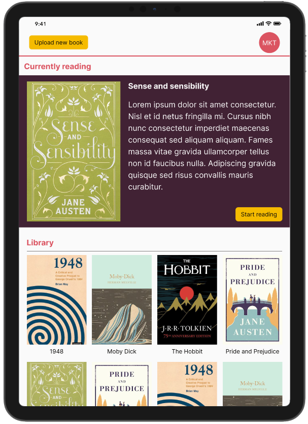

Explore my selected projects, ranging from my Master’s Thesis at Moesgaard Museum to interactive mobile applications and AI-driven systems.
Education
I hold a Master’s degree in Interaction Design from the University of Aalborg, where I explored the intersection of physical and digital interactions. My focus is on designing engaging user experiences through research-driven methodologies and technology. This educational background has laid the foundation for my work on projects like my Master’s Thesis, Zoodex, and other interactive design challenges.
Master’s Thesis, Moesgaard Museum
Designed and evaluated a hybrid interactive installation combining physical and touchscreen interaction. The prototype improved usability and engagement across all UES-SF dimensions, with 86.8% of visitors preferring the redesigned version. Findings were supported by observations and interaction logs, showing increased engagement and reduced errors.
Zoodex, Aalborg Zoo
Developed an Android application using image classification and large language models to enhance zoo visitor engagement. Evaluated with pupils aged 12–14, showing strong engagement through exploration and interactive animal chat experiences.
Retroscribe
Designed an AI-driven concept for rewriting classic literature into contemporary language. User studies showed strong preference for the rewritten format, improving accessibility and engagement for younger readers.

Work Experience
See my professional experience and the systems I have worked on.